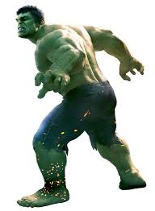
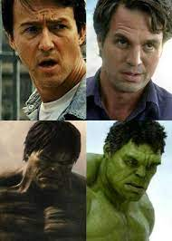
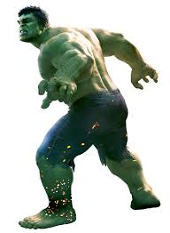
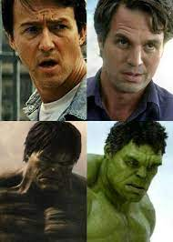

Dr. Robert David Bruce Banner, M.D., Ph.D., also known as Hulk (born December 18, 1969), is a
major character in the Infinity Saga of the Marvel Cinematic Universe. He is the titular main protagonist
of The Incredible Hulk, one of the titular main protagonists of The Avengers tetralogy, the tritagonist
of Thor: Ragnarok, and a cameo character in both Iron Man 3 and Captain Marvel.
Bruce is portrayed by Edward Norton in The Incredible Hulk and Mark Ruffalo for the rest of the movie
series in the Avengers films, and Thor: Ragnarok. In The Incredible Hulk, The Avengers and Avengers: Age
of Ultron, Hulk is voiced by Lou Ferrigno, who also played Billy in Adventure Time. Taika Waititi also did
motion capture for the character, and he also played Korg in the same series.
| Full name | Robert Bruce Bunner |
| Origin: | Marvel Cinematic Universe. |
| Type of hero: | Bio-Engineered Brute. |
| Occupation: | Superhero.
Scientist. Fugitive. Champion of the Grandmaster. Harvard University Student. Nyclear physicist Professor. Pingo Doce Bottling plant Employee. |
| Alias: | The Hulk.
Hulk. The Incredible Hulk. David . Mr Green. The Big Guy. The Other Guy. |
| Skills: | Genius-level intellect.
Expert Tactician. Multilingualism. Artificially Enhanced. Physiology: Superhuman Strength. Superhuman Durability. Superhuman Speed. Superhuman Endurance. Superhuman Leaping. Superhuman Stamina. Transformation. Anger Empowerment . Accelerated Regerneration. Decent Fighting Skills. Nano Gauntlet: Nigh-Omnipotence. Resurrection. Universal Influnce. |